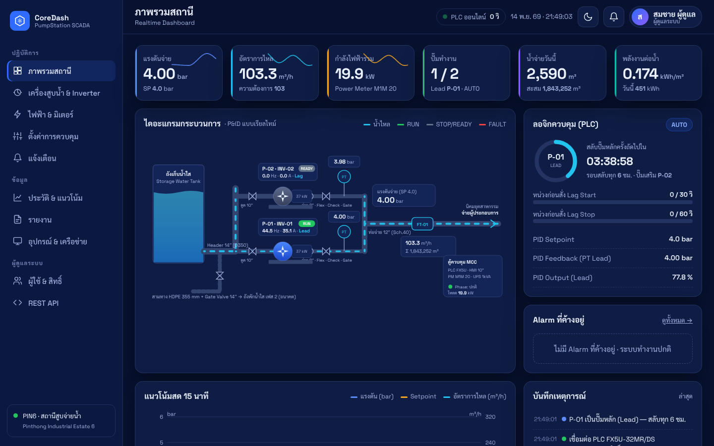
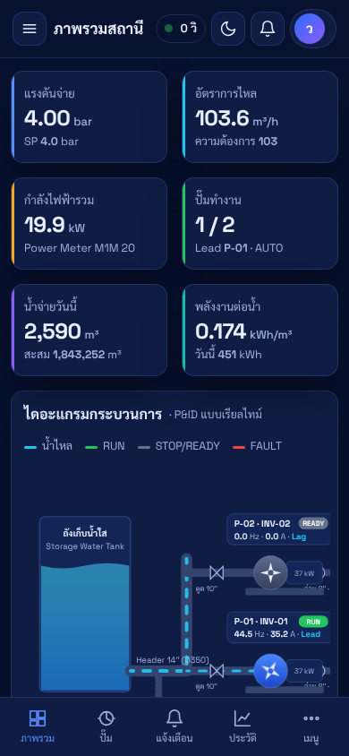

ระบบติดตามและควบคุมเครื่องสูบน้ำ 2 × 37 kW แบบเรียลไทม์ รักษาแรงดัน 4 bar ด้วย PID สลับปั๊มอัตโนมัติทุก 6 ชั่วโมง แจ้งเตือนทันทีทาง LINE OA, Telegram และ Email ใช้ได้ทั้งเว็บและแอปมือถือ พร้อม REST API มาตรฐานเปิด
หน้าจอจริงจากระบบสาธิต ทุกค่าเคลื่อนไหวตามลอจิก PLC ที่ระบุใน TOR กด "เปิดระบบสาธิต" แล้วเลือกสิทธิ์ผู้ใช้เพื่อลองได้ทันที


แรงดัน อัตราการไหล กำลังไฟ พลังงานต่อ m³ และ P&ID ที่แสดงน้ำไหล ปั๊มหมุน สถานะ RUN/STOP/FAULT
ตั้ง PID Setpoint, Interval สั่ง Run/ปิดปั๊มตัวที่ 2, รอบสลับ 6 ชม. พร้อมยืนยันและบันทึกผู้แก้ไข
LINE OA, Telegram, Email แยกระดับความรุนแรง แจ้งซ้ำเมื่อไม่มีผู้รับทราบ มีประวัติการส่งตรวจสอบย้อนหลัง
เลือกจุดวัด ช่วงเวลา ช่วงรวมข้อมูล ส่งออก CSV รายงานประจำเดือนพิมพ์เป็น PDF พร้อมช่องลงนาม
สิทธิ์แยกชัดเจน ทุกการเข้าระบบ สั่งงาน แก้ค่า รับทราบ Alarm ถูกบันทึกพร้อมเวลาและ IP
JSON มาตรฐาน OpenAPI 3.0 ยืนยันตัวตนด้วย API Key กำหนด Scope และ Rate limit ต่อระบบที่เชื่อมต่อ
อ้างอิง TOR EN0013/2569 ข้อ 3.2.3 – 3.2.5, 5 และ 7 · ทุกข้อทดสอบได้จริงในระบบสาธิต
| ข้อ TOR | ข้อกำหนด | สิ่งที่ส่งมอบ | สถานะ |
|---|---|---|---|
| 3.2.3 | PLC อ่านค่า Inverter 2 ตัว 18 รายการ (Frequency, Speed, Current, Torque, Power, DC Bus, Output V, Energy, Saved Energy/Amount, Fault/Warning, Fault Log, Run Time ×3, PID, Pressure, Run/Stop/Ready) | แสดงครบทุกค่าในหน้า "เครื่องสูบน้ำ & Inverter" พร้อมเกจ ตาราง และ Fault Log | ✓ |
| 3.2.3 | PLC อ่าน Power Meter (V/A/Hz L1–L3, Totalizer), Phase Protection, Flowmeter (Flow Rate, Totalizer) | หน้า "ไฟฟ้า & มิเตอร์" แสดงสามเฟส สถานะ Phase Protection และ Totalizer | ✓ |
| 3.2.3 | PLC เขียนค่า DI01 Start/Stop, DI02 Reset Fault | ปุ่มสั่งงานพร้อมยืนยันและบันทึก Log ผู้สั่ง (ตามสิทธิ์) | ✓ |
| 3.2.3 | ตั้งค่า PID · Interval สั่ง Run/ปิด Pump 2 · สลับกัน Run ทุก 6 ชม. · สั่ง/ตั้งค่าผ่าน HMI | หน้า "ตั้งค่าการควบคุม" ตั้ง Setpoint, Kp/Ti, Interval, รอบสลับ · Mimic แสดง Lead/Lag และนับถอยหลังการสลับ | ✓ |
| 3.2.4 (1) | โปรแกรม SCADA แสดง Dashboard การทำงานแบบ Realtime | Dashboard + P&ID เคลื่อนไหว อัปเดตทุก 1 วินาที | ✓ |
| 3.2.4 (2) | ดูออนไลน์ผ่านเว็บไซต์ | Web App + Mobile App (ติดตั้งบน iOS/Android ได้แบบ PWA) | ✓ |
| 3.2.4 (3) | แจ้งเตือนผ่าน Email, LINE OA, Telegram | ตั้งผู้รับ/ระดับความรุนแรงแยกช่องทาง · ทดสอบส่ง · ประวัติการส่ง · แจ้งซ้ำหากไม่มีผู้รับทราบ | ✓ |
| 3.2.4 (4) | ดูประวัติการทำงานของอุปกรณ์ | ประวัติ & แนวโน้ม เลือกจุดวัด/ช่วงเวลา/ช่วงรวมข้อมูล · ไทม์ไลน์การทำงานปั๊ม · รายงานรายวัน/เดือน · CSV/PDF | ✓ |
| 3.2.4 (5) | ผู้ใช้อย่างน้อย 3 ระดับ (ผู้ดูแลระบบ/ผู้ปฏิบัติงาน/ผู้ดูข้อมูล) และ Log การทำงานของผู้ใช้ | สิทธิ์ 3 ระดับ 10 ความสามารถ · Audit Log ทุกการกระทำ ส่งออกได้ | ✓ |
| 3.2.5 (1) | REST API รูปแบบ JSON | REST API v1 · JSON · OpenAPI 3.0 | ✓ |
| 3.2.5 (2) | ค่าล่าสุด ข้อมูลย้อนหลัง สถานะอุปกรณ์ รายการ Alarm เวลาอัปเดตล่าสุด | /latest · /history · /devices/status · /alarms · /meta/last-update · /points | ✓ |
| 3.2.5 (3) | ระบุจุดตรวจวัด เวลาเริ่มต้น-สิ้นสุด และช่วงเวลารวมข้อมูล | point, start, end (ISO 8601), interval 1m–1d, agg avg/min/max | ✓ |
| 3.2.5 (4) | API Key/Token กำหนด/ยกเลิกสิทธิ์ และจำกัดจำนวนการเรียก | สร้าง/ยกเลิกคีย์ · Scope ต่อคีย์ · Rate limit ต่อนาที · Header X-RateLimit-* | ✓ |
| 3.2.5 (5) | API Documentation พร้อมตัวอย่าง Request/Response และรหัสข้อผิดพลาด | docs/api.html + api/openapi.yaml + ทดลองเรียกในระบบ | ✓ |
| 3.2.5 (6) | ใช้งาน API ได้โดยไม่ผูกขาดกับผู้พัฒนา | มาตรฐานเปิด ส่งมอบ Spec ครบ ใช้กับ ERP / Power BI / BMS ใดก็ได้ | ✓ |
| 7 (3–5) | ทดสอบโปรแกรมตามขั้นตอน · ทดสอบ SCADA · ทดสอบ API | แผน FAT/SAT พร้อมแบบฟอร์มทดสอบทุกข้อ · โหมดจำลองเหตุการณ์ช่วยทดสอบลอจิก | ✓ |
| 5 (2) | รับประกันผลงาน 1 ปี | รับประกัน 1 ปี · Remote support · อัปเดตแก้ไขข้อบกพร่อง | ✓ |
อุปกรณ์ทุกตัวในตู้ควบคุมเชื่อมผ่าน Gigabit Switch · PLC ยังควบคุมได้เต็มที่แม้อินเทอร์เน็ตขัดข้อง SCADA เป็นชั้นติดตามและสั่งการที่ไม่แทรกความปลอดภัยของหน้างาน
ทำงานคู่ขนานกับงานติดตั้งตู้ควบคุมและเครื่องสูบน้ำ เพื่อทดสอบระบบได้ทันทีที่เครื่องพร้อม
เลือกเข้าใช้เป็นผู้ดูแลระบบ ผู้ปฏิบัติงาน หรือผู้ดูข้อมูล แล้วกด "โหมดนำเสนอ" เพื่อดูการแจ้งเตือนและการสลับปั๊มอัตโนมัติ